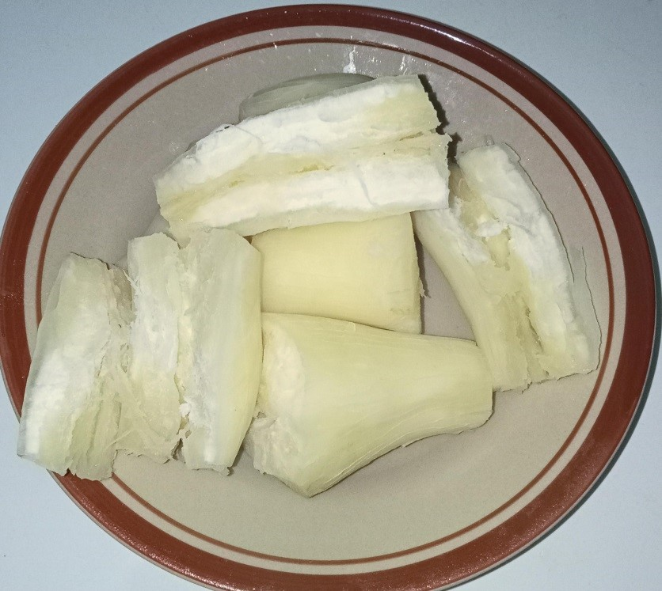

Kearifan lokal adalah pandangan hidup suatu masyarakat di wilayah tertentu mengenai lingkungan alam tempat mereka tinggal. Pandangan hidup ini biasanya adalah pandangan hidup yang sudah berurat akar menjadi kepercayaan orang-orang di wilayah tersebut selama puluhan bahkan ratusan tahun. Naritoom (Wagiran, 2012: 330) mendefinisikan kearifan lokal sebagai pengetahuan yang ditemukan atau diperoleh oleh masyarakat lokal melalui akumulasi pengalaman dalam uji coba dan terintegrasi dengan pemahaman tentang alam dan budaya sekitarnya.
Bentuk-bentuk kearifan lokal adalah Kerukunan beragaman dalam wujud praktik sosial yang dilandasi suatu kearifan dari budaya. Bentuk-bentuk kearifan lokal dalam masyarakat dapat berupa budaya (nilai, norma, etika, kepercayaan, adat istiadat, hukum adat, dan aturan-aturan khusus). Nilai-nilai luhur terkait kearifan lokal meliputi Cinta kepada Tuhan, alam semesta beserta isinya, tanggung jawab, disiplin, dan mandiri, jujur, hormat dan santun, kasih sayang dan peduli, percaya diri, kreatif, kerja keras, dan pantang menyerah, Keadilan dan kepemimpinan, Baik dan rendah hati,Toleransi,cinta damai, dan persatuan.
Salah satu kearifan lokal yang masih dilakukan masyarakat Desa Wakumoro sampai saat ini yaitu ritual Kaago-ago, Makanan khas (Katumbu, katofino kapaeya, katofino mafusau, Kambuse), Alat musik tradisional (Mbololo), dan Wisata alam permandian Fotuno Rete.
1. Ritual Kaago-ago
Ritual kaago-ago merupakan salah satu ritual atau upacara yang dilakukan oleh masyarakat desa Wakumoro sebagai bentuk kepercayaan mereka terhadap roh dan doa keselamatan yang dianggap sakral.
a. Ritual kaago-ago untuk pembukaan lahan dilakukan karena sebagian besar masyarakat desa Wakumoro berprofesi sebagai petani, sehingga sering dilakukan pembukaan lahan untuk berkebun. Dalam proses pembukaan lahan baru, masyarakat desa Wakumoro selalu melakukan ritual kaago-ago dengan tujuan agar hasil panen melimpah dan agar tanaman terhindar dari serangan hama. Ritual kaago-ago ini merupakan bagian dari tradisi dan kearifan lokal yang telah diwariskan dari generasi ke generasi. Masyarakat percaya bahwa dengan melaksanakan ritual ini, mereka dapat memohon kepada Tuhan dan roh nenek moyang untuk memberikan berkah atas usaha pertanian mereka.
Ritual kaago-ago biasanya dilakukan sebelum memulai aktivitas pertanian, seperti menyiapkan lahan, menanam, dan merawat tanaman. Dalam pelaksanaannya, masyarakat akan berkumpul di lokasi lahan yang akan dibuka, membawa berbagai sesaji yang terdiri dari hasil pertanian, seperti beras, jagung, dan buah-buahan. Sesaji ini dipersembahkan sebagai ungkapan syukur dan permohonan agar hasil panen yang diperoleh nantinya dapat melimpah. Selain itu, mereka juga akan mengucapkan doa dan harapan agar tanaman yang ditanam terhindar dari hama dan penyakit.
b. Ritual Kaago-ago kabhahono bara dan kabhahono timbu dilakukan dengan harapan keselamatan bagi masyarakat desa Wakumoro dan terhindar dari bencana alam, ritual tersebut dilakukan pada saat menjelang musim barat dan musim timur dalam setahun. Hal tersebut berangkat dari sejarah Rete atau Wakumoro yang pada saat itu terjadi kemarau panjang yang mengakibatkan krisis pangan dan kehabisan tersediaan bahan makanan karena masyarakat tidak dapat beraktifitas sebagai mana biasanya sehingga kematian yang secara mendadak terjadi secara besar-besaran. Oleh karena itu, masyarakat desa Wakumoro melakukan ritual Kaago-ago kabhahono bara ( musim panas) dan kabhahono timbu (musim hujan) agar bencana alam atau kemarau panjang tersebut tidak terulang kembali.
c. Kaago-ago dalam ritual Safar dilakukan karena Ritual safar merupakan kegiatan tahunan yang dilakukan masyarakat desa Wakumoro pada hari rabu, minggu terakhir bulan safar yang dilakukan di permandian Mata Air Fotuno Rete. Dalam ritual tersebut dilakukan dengan menggunakan ritual kaago-ago seperti kaago-ago lainnya mulai dari tahapan, bahan, sampai dengan orang yang melakukan ritual tersebut seperti kaago-ago pada umumnya. Setiap Hari rabu minggu terakhir bulan safar setiap tahun agenda tahunan, jadi doanya memohon kepada yang maha kuasa agar musibah di jauhkan dari masyakart di kampung. Kakagino safara jdi turun temurun setiap bulan safar hari rabu minggu terakhir selalu di adakan kegiatan kakagino safara. Bulan safar sebenarnya banyak peristiwa selalu terjdi di bulan safar atau bulan naas, pada zaman Rasululllah ada Perang uhud yang sangat menyedihkan, rasulullah saat pamanya meninggal yang bernama hamsah yang gugur di medan perang uhud pada hari rabu bulan safar minggu terakhir. salah satu yang melatar belakangi kakagino safara untuk memperingati kesedihan rasulullah ketika paman kesayangannya gugur pada perang uhud. terlepas dari itu sekaligus di doakan di kampung agar tehindar dari kasus atau bala tidak terjadi lagi dan cukup di zaman rasululllah sehingga ritual tersebut biasa disebut sebagai ritual tolak bala.
2. Makanan Khas
Di Desa Wakumoro terdapat berbagai macam makanan tradisional dan makanan khasnya yang menggugah selera.
Makanan-makanan ini diwariskan secara turun-temurun dari nenek moyang, setiap sajian khas Desa
Wakumoro memiliki cita rasa yang unik dan autentik. Bahan-bahan yang digunakan sebagian besar berasar dari alam sekitar, sehingga kualitasnya sangat terjaga. Oleh karena itu, makanan khas Desa Wakumoro menjadi daya tarik tersendiri bagi para pengunjung.
a. Katumbu
Katumbu Merupakan salah satu makanan Khas Muna, Sulawesi Tenggara yang terbuat dari jagung yang sudah populer sejak Zaman Dahulu Kala. Jagung yang digunakan merupakan jagung muda, yang digiling atau diparut. Makanan ini dulunya disajikan untuk raja. Katumbu yang diparut, dikhususkan untuk raja, sedangkan pembuatan katumbu yang digiling disajikan untuk rakyat biasa. Jagung yang baru dipanen untuk pembuatan katumbu kemudian dikupas, dan kulitnya tidak dibuang atau dapat disimpan sebagai pembungkusnya nanti. Hal itu dilakukan agar rasa jagung dari katumbu tidak hilang, dan masyarakat muna juga percaya bahwa membungkus katumbu dengan bungkusan lain akan mengubah aroma jagung dari katumbu itu sendiri. Setelah biji jagung dibersihkan dari tongkolnya, jagung siap digiling. Tim KKN Tematik UHO melakukan penelitian tentang cara pembuatan Katumbu, Katumbu pun terbagi menjadi 2 jenis yaitu Katumbu Kapute dan Katumbu Ghola. Adapun cara pembuatan katumbu dapat dilihat pada penjelasan dibawah ini :
Alat dan Bahan :
1. Alat Adapun alat yang digunakan untuk pembuatan Katumbu ini adalah Parang, Parutan, Penggiling jagung yang dalam bahasa Muna namanya Kagili Bambu yang telah diiris kecil yang kemudian ujungnya diruncingkan dalam bahasa Muna namanya Kasoma, Panci, dan Pisau.
2. Bahan Bahan yang digunakan dalam pembuatan Katumbu ini adalah Jagung muda, Kelobot atau pembungkus tongkol jagung yang dalam bahasa Munanya adalah Khabokolo, gula pasir, gula merah dan garam.
Cara Pembuatan : Untuk cara pembuatan Katumbu ini pertama, menyiapkan alat dan bahan. Kemudian jagung muda dibagi menjadi 2 bagian dan di parut hingga halus. Jagung muda yang sudah dihaluskan kemudian ditambahkan dengan gula pasir dan garam secukupnya ini untuk adonan Katumbu Kapute. Kemudian sebagian adonan katumbu tersebut dipisahkan pada satu wadah tempat untuk Katumbu Ghola. Masukan gula merah yang telah diiris halus pada adonan dan aduk hingga tercampur rata. Adonan Katumbu kapute maupun katumbe ghola dibungkus dalam pembungkus jagung. Untuk sajian makanan raja, dibungkus rapi dengan ujung atas dan bawahnya ditusuk menggunakan bambu yang telah diiris kecil dan ujungnya diruncingkan. Sedangkan pembungkus katumbu untuk rakyat biasa, hanya dibungkus biasa tanpa tusukan bambu pada bagian atas ataupun bawah. kemudian, Katumbu yang telah selesai dibungkus kemudian dimasukan kedalam panci besar (dandang) yang telah diisi air. Setelah itu nyalakan api, baiknya menggunakan tungku dengan api besar. Kemudian tunggu hingga katumbu tersebut masak. Jika telah masak, maka angkat katumbu dan pindahkan kepiring atau talenan. Katumbu siap disajikan.
b. Pepaya Rebus (Katofino Kapaeya)
Pepaya rebus (katofino kapaeya) merupakan salah satu hidangan khas suku Muna yang sering dinikmati saat panas. Makanan ini biasanya disajikan dengan kambuse, katofino mafusau, dan kapinda, menciptakan kombinasi rasa yang lezat dan menyegarkan. Dalam budaya suku Muna, pepaya rebus tidak hanya menjadi santapan lezat, tetapi juga memiliki makna simbolis yang dalam terkait dengan kebersihan, kesehatan, dan kesegaran. Pepaya rebus dalam budaya suku Muna mungkin dianggap sebagai simbol kebersihan karena proses perebusannya dapat membantu membersihkan buah pepaya dari kuman dan kotoran yang mungkin ada. Selain itu, pepaya sendiri dikenal mengandung banyak serat dan nutrisi penting yang baik untuk kesehatan tubuh. Dengan mengonsumsi pepaya rebus, masyarakat Muna dapat menjaga kesehatan mereka dan mencegah penyakit.
c. Ubi rebus (katofino mafusau)

Ubi rebus merupakan salah satu makanan tradisional yang sangat populer di kalangan suku Muna. Makanan ini disiapkan dengan merebus umbi-umbian seperti ubi jalar atau ubi kayu hingga matang. Ubi rebus sering dihidangkan dalam berbagai acara keluarga sebagai simbol keberlimpahan dan kesejahteraan. Kehadirannya dalam acara-acara penting menunjukkan rasa syukur dan keberkahan atas rezeki yang diberikan. Selain sebagai simbol keberlimpahan, ubi rebus juga mencerminkan hubungan harmonis antara manusia dan alam. Bahan baku utamanya, yaitu umbi-umbian, berasal dari alam dan diproses dengan cara sederhana seperti direbus. Hal ini menggambarkan penghargaan suku Muna terhadap alam sebagai sumber kehidupan yang memberikan makanan yang bergizi dan bermanfaat.
Dalam budaya suku Muna, ubi rebus juga dapat menjadi representasi dari kearifan lokal dalam memanfaatkan sumber daya alam secara berkelanjutan. Proses memasak ubi rebus yang sederhana dan tradisional menunjukkan kelestarian nilai-nilai budaya dan keberlanjutan lingkungan. Masyarakat suku Muna menjaga keseimbangan antara penggunaan sumber daya alam dan pelestarian lingkungan demi kesejahteraan bersama. Selain itu, ubi rebus juga memiliki nilai gizi yang tinggi dan memberikan energi yang dibutuhkan untuk menjalani aktivitas sehari-hari. Kandungan karbohidrat, serat, dan nutrisi lainnya dalam ubi memberikan manfaat kesehatan bagi konsumen. Dengan mengonsumsi ubi rebus, masyarakat suku Muna dapat menjaga kesehatan dan kebugaran tubuh mereka.
4. Alat Musik Tradisional Mbololo
Mbololo merupakan alat musik tradisional suku Muna yang dimainkan pada saat acara-acara tertentu seperti upacara pernikahan, karia, dan silat Muna. Setiap upacara, bunyi gong (mbololo) berbeda-beda, menciptakan suasana yang khas dan unik sesuai dengan jenis acara yang berlangsung. Mbololo terbuat dari bahan logam yang dipukul dengan alat pemukul, menghasilkan suara yang resonan dan mendalam. Suara yang dihasilkan oleh mbololo tidak hanya berfungsi sebagai pengiring musik, tetapi juga memiliki makna simbolis yang dalam bagi masyarakat suku Muna.
Dalam upacara pernikahan, misalnya, mbololo dimainkan untuk menandai momen-momen penting, seperti saat pengantaran pengantin laki-laki ke rumah pengantin perempuan. Bunyi gong yang dihasilkan menciptakan suasana sakral dan meriah, menambah keindahan acara tersebut. Begitu pula dalam acara karia, yang merupakan bentuk pertunjukan seni tradisional, mbololo menjadi bagian integral yang menghidupkan suasana dan memberikan ritme pada tarian yang ditampilkan.
Selain itu, dalam silat Muna, mbololo berfungsi untuk membangkitkan semangat para pesilat dan memberikan tanda-tanda tertentu selama pertunjukan. Setiap nada dan irama yang dihasilkan memiliki arti tersendiri, yang dapat mempengaruhi emosi dan semangat para penari atau pesilat. Pada saat silat berlangsung apabila pemukul gong salah ketukan dalam membunyikan gong itu juga dapat mengakibatkan para pemain silat salah gerakan bahkan sampai melukai sesama pemain karena pemain gerakan pemain silat selalu mengikuti irama gong ( mbololo) tersebut.